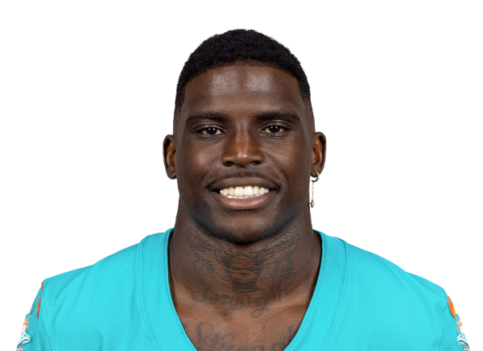

BALL KEEP
Dynasty · Redraft
Player File · WR FA

Tyreek Hill
WR · FA · 24 · West Alabama
2025 season
Counting stats
No 2026 regular-season line yet.
Yards265
Touches21
Catches21
Targets29
TDs1
Snap %69.2%
Rush yds0
Rec yds265
Catch %72.4%
Yds/touch12.6
PPR53.5
Games4
Yearly
| Year | G | Snap % | Touches | Tgt | Rec | Yds | TD | Rush | RuYd | ReYd | PPR |
|---|---|---|---|---|---|---|---|---|---|---|---|
| 2025 | 4 | 69.2% | 21 | 29 | 21 | 265 | 1 | 0 | 0 | 265 | 53.5 |
| 2024 | 17 | 79.6% | 89 | 123 | 81 | 1,012 | 6 | 8 | 53 | 959 | 218.2 |
| 2023 | 16 | 66.5% | 125 | 171 | 119 | 1,814 | 13 | 6 | 15 | 1,799 | 376.4 |
Regular-season line from Sleeper. Touches are carries plus catches. Yards are rushing plus receiving. Snap % is offensive snaps divided by team offensive snaps.
Keep avg274.5
# Boards4
BK Value479
Spread184-386
The Keep#293BK 479The Board#258BK 656The Classic#259BK 650Best Ball#222BK 909SF Redraft#290BK 492STD#259BK 650
Board graph
Spread 184-386 · 4 sources
Every Board
Spread 184-386 · 4 sources
| Source | Rank |
|---|---|
| PFN (Katz/Soppe) | 184 |
| FantasyPros ECR | 247 |
| Dynasty Nerds | 281 |
| KeepTradeCut SF | 386 |
BK News
- NFL rumors: Adam Schefter names 5 trade candidates to watch, and of course Marvin Harrison Jr. leads list
- Chiefs’ Patrick Mahomes, Travis Kelce Make Feelings Known as Chiefs Eye Tyreek Hill Amid Injuries
- Will Patrick Mahomes play against the Las Vegas Raiders today? Latest injury update on the Kansas City Ch
- Patrick Mahomes’ Touching Reaction to Tyquan Thornton’s Injury Reveals Deep Bond in Chiefs Locker Room
- Patrick Mahomes Injury Update: What’s the Latest on the Chiefs Superstar and Will He Play in Week 1?
All player pages · The Keep · The Board · Recent deals · Hot 'n' Cold · BK News · Trade calculator